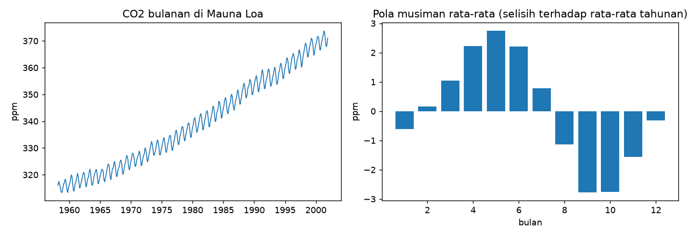

Data Deret Waktu dan EDA¶
Tujuan pembelajaran¶
- Memeriksa indeks waktu: frekuensi, rentang, dan timestamp yang hilang.
- Membedakan timestamp hilang dari nilai hilang (
NaN) dan menanganinya. - Mengagregasi (resample) deret ke frekuensi lain.
- Melakukan EDA khas deret waktu: tren, pola musiman, dan laju pertumbuhan.
Dataset: CO2 Mauna Loa¶
- Sumber dan akses: konsentrasi CO2 atmosfer mingguan di Mauna Loa, Hawaii (ppm), Maret 1958–Desember 2001, dibundel dengan statsmodels (
statsmodels.datasets.co2), tanpa unduhan. Kutipan dari dokumentasi dataset: Keeling, C.D. dan T.P. Whorf (2004), Atmospheric CO2 concentrations derived from flask air samples at sites in the SIO network, Carbon Dioxide Information Analysis Center, Oak Ridge National Laboratory. Dokumentasi statsmodels menyatakan data ini domain publik. - Isi: 2284 baris mingguan satu variabel (
co2), indeks tanggal. - Batasan: berhenti pada 2001; deret fisik yang halus dengan tren dan musiman yang sangat jelas, jadi lebih mudah diprediksi daripada banyak deret bisnis. Dipakai sebagai alat belajar.
Fungsi bantu forecast_utils.py (memuat data bulanan dan menghitung metrik) dipakai di seluruh bab ini.
Kode fungsi bantu (forecast_utils.py)
"""Fungsi bantu untuk bab Forecasting: memuat data CO2 bulanan dan menghitung metrik.
Data: konsentrasi CO2 atmosfer mingguan di Mauna Loa (1958-2001), dibundel dengan
statsmodels (domain publik). Kutipan: Keeling, C.D. dan T.P. Whorf (2004).
"""
import numpy as np
import pandas as pd
from statsmodels.datasets import co2
SEASON = 12 # periode musiman data bulanan
def load_co2_monthly():
"""Rata-rata bulanan CO2 (ppm), indeks bulanan 'MS'.
Ada 5 bulan tanpa data (semuanya sebelum 1965). Karena berada jauh di dalam
data latih, bulan itu diisi dengan interpolasi berbasis waktu.
"""
weekly = co2.load_pandas().data["co2"]
monthly = weekly.resample("MS").mean()
return monthly.interpolate(method="time").rename("co2")
def mae(y_true, y_pred):
return float(np.mean(np.abs(np.asarray(y_true) - np.asarray(y_pred))))
def rmse(y_true, y_pred):
return float(np.sqrt(np.mean((np.asarray(y_true) - np.asarray(y_pred)) ** 2)))
def smape(y_true, y_pred):
y_true, y_pred = np.asarray(y_true), np.asarray(y_pred)
return float(np.mean(2 * np.abs(y_true - y_pred) / (np.abs(y_true) + np.abs(y_pred))) * 100)
def mase(y_true, y_pred, y_train, m=SEASON):
"""MASE: MAE dibagi MAE seasonal-naive pada DATA LATIH (1.0 = sama dengan seasonal naive)."""
y_train = np.asarray(y_train)
scale = np.mean(np.abs(y_train[m:] - y_train[:-m]))
return mae(y_true, y_pred) / float(scale)
def seasonal_naive(train, horizon, m=SEASON):
"""Prediksi = nilai pada musim yang sama tahun lalu (diulang bila horizon > m)."""
last_season = np.asarray(train)[-m:]
return np.resize(last_season, horizon)
Pemeriksaan data langkah demi langkah¶
Program examples/forecasting/co2_eda.py; program lengkap ada di akhir bagian ini.
Langkah 1: struktur waktu¶
Tujuan. Memastikan indeks berupa tanggal, urut, dan berjarak teratur.
| Kode | Penjelasan |
|---|---|
co2.load_pandas().data["co2"] |
Memuat dataset bawaan statsmodels sebagai DataFrame dan mengambil kolom co2 sebagai Series berindeks tanggal. |
weekly.index.min().date() |
Tanggal paling awal dan paling akhir pada indeks. |
weekly.index.to_series().diff().dt.days.dropna().unique() |
Mengubah indeks menjadi Series, menghitung selisih antar-tanggal (diff()), mengambil jumlah hari (.dt.days), dan melihat nilai yang berbeda (unique()). |
Hasil. Data berawal 1958-03-29 dan berakhir 2001-12-29 dengan 2284 baris; setiap baris berjarak tepat 7 hari, jadi frekuensinya mingguan dan teratur.
Langkah 2: nilai hilang (NaN)¶
| co2_eda.py | |
|---|---|
weekly.isna().sum() menghitung nilai kosong. Baris kedua mengelompokkan nilai kosong menurut dekade: index.year // 10 * 10 membulatkan tahun ke dekade (1958 → 1950), lalu .size() menghitung jumlah per kelompok.
Hasil. 59 nilai mingguan kosong, sebagian besar pada 1958–1964, satu pada 1970-an, dan lima pada 1980-an. Tanggalnya ada, hanya nilainya kosong.
Langkah 3: timestamp hilang berbeda dari nilai hilang¶
Konsep. Timestamp hilang berarti barisnya tidak ada sama sekali, sehingga lag "satu langkah sebelumnya" tidak lagi berarti satu minggu. Untuk memperagakannya, tiga baris dihapus secara sengaja (simulasi buatan).
| Kode | Penjelasan |
|---|---|
weekly.drop(weekly.index[[100, 101, 500]]) |
Menghapus tiga baris pada posisi 100, 101, dan 500. |
pd.date_range(min, max, freq="7D") |
Membangun indeks lengkap tiap 7 hari dari tanggal awal ke akhir. |
full_index.difference(gappy.index) |
Tanggal yang ada di indeks lengkap tetapi tidak di data = tanggal yang hilang. |
gappy.asfreq("7D") |
Memaksa deret memiliki frekuensi 7 hari: baris yang hilang ditambahkan dengan nilai NaN. |
[simulasi] timestamp hilang terdeteksi: ['1960-02-27', '1960-03-05', '1967-10-28']
setelah asfreq -> baris: 2284 | NaN baru: 3
Hasil. Ketiga tanggal hilang terdeteksi (1960-02-27, 1960-03-05, 1967-10-28), dan asfreq mengembalikan 2284 baris dengan 3 NaN baru. Selalu periksa timestamp dan nilai hilang sebelum memodelkan.
Langkah 4: agregasi bulanan dan mengisi bulan kosong¶
| Kode | Penjelasan |
|---|---|
weekly.resample("MS").mean() |
Mengelompokkan data mingguan per bulan (MS = awal bulan) dan merata-ratakannya. Bulan yang seluruh minggunya kosong menjadi NaN. |
interpolate(method="time") |
Mengisi NaN dengan interpolasi linear menurut jarak waktu antara titik sebelum dan sesudahnya. |
ffill() |
Forward fill: menyalin nilai valid terakhir ke depan. |
bulan tanpa data: ['1958-06', '1958-10', '1964-02', '1964-03', '1964-04']
bulan 1964 terisi -> interpolasi waktu: [320.07, 320.69, 321.36] | ffill: [319.4, 319.4, 319.4]
Interpretasi. Terdapat 5 bulan tanpa data: 1958-06, 1958-10, dan 1964-02 sampai 1964-04. Interpolasi waktu mengisi tiga bulan 1964 dengan 320,07, 320,69, 321,36 ppm (mengikuti tren), sedangkan ffill menyalin 319,4 untuk ketiganya sehingga menghasilkan "datar buatan" yang mengabaikan tren dan musim. Interpolasi memakai nilai sebelum dan sesudah celah. Itu aman di sini karena semua celah berada jauh di dalam data latih; untuk celah di dekat data uji atau pada saat prediksi, hanya boleh memakai nilai masa lalu (ffill) atau metode yang tidak melihat ke depan.
Langkah 5: ringkasan pola (tren dan musiman)¶
| Kode | Penjelasan |
|---|---|
m.groupby(m.index.year).mean() |
Rata-rata per tahun. |
(annual[1980] - annual[1960]) / 20 |
Kenaikan rata-rata per tahun antara 1960 dan 1980. |
m.groupby(m.index.year).transform("mean") |
Rata-rata tahunan dari tiap bulan, dijajarkan ke bentuk data bulanan; m - ... menghasilkan selisih terhadap rata-rata tahunnya (menghilangkan tren antar-tahun). |
detr.groupby(detr.index.month).mean() |
Rata-rata selisih itu untuk tiap bulan kalender = pola musiman rata-rata. |
rata-rata 1960: 316.9 | 1980: 338.6 | 2000: 369.4 ppm
kenaikan rata-rata per tahun 1960-1980: 1.09 | 1980-2000: 1.54
bulan puncak: 5 (2.7 ppm) | bulan terendah: 9 (-2.8 ppm)
Interpretasi. Rata-rata tahunan 316,9 ppm (1960), 338,6 (1980), 369,4 (2000); kenaikan rata-rata 1,09 ppm per tahun pada 1960–1980 dan 1,54 pada 1980–2000, yaitu tren yang menanjak. Pola musiman: puncak pada Mei (+2,7 ppm dari rata-rata tahunan) dan lembah pada September (-2,8 ppm).
Langkah 6: gambar¶

Cara membaca. Kiri: sumbu-x tahun, sumbu-y konsentrasi CO2 (ppm); garis naik dengan gelombang kecil berulang tiap tahun (tren plus musiman). Kanan: sumbu-x bulan 1–12, sumbu-y selisih terhadap rata-rata tahunan; batang positif di musim semi (puncak sekitar Mei), negatif di akhir musim panas dan awal musim gugur (lembah sekitar September–Oktober).
Program lengkap (co2_eda.py)
Praproses deret waktu: aturan¶
- Pastikan indeks bertipe
DatetimeIndex, terurut, tanpa duplikat, dan memiliki frekuensi tetap. - Tangani nilai dan timestamp hilang dengan cara yang tidak memakai informasi masa depan relatif terhadap titik prediksi.
- Jangan imputasi acak atau memakai rata-rata global; gunakan interpolasi atau pengisian yang mempertimbangkan waktu.
- Agregasi ke frekuensi yang sesuai dengan keputusan bisnis (harian vs bulanan).
- Periksa outlier dan perubahan struktural (lonjakan, perubahan definisi data).
Kesalahan umum¶
Hindari
- Mengisi nilai hilang memakai statistik seluruh deret (termasuk masa depan).
- Mengacak urutan sebelum EDA atau pemodelan.
- Membiarkan timestamp hilang sehingga lag tidak lagi berarti "bulan lalu".
- Mengabaikan perubahan frekuensi atau zona waktu.
Latihan¶
- Hitung rata-rata CO2 per bulan untuk 1990-an dan bandingkan dengan 1960-an. Apakah amplitudo musimannya berubah?
- Isi bulan yang hilang dengan
ffilllalu bandingkan MAE seasonal naive (lihat lesson validasi) terhadap interpolasi. - Hitung
weekly.resample("QS").mean()dan bandingkan dengan agregasi bulanan.
Ringkasan¶
EDA deret waktu memeriksa indeks, celah, pola tren, dan musiman. Tangani nilai hilang dengan metode yang sadar waktu dan tidak membocorkan masa depan.
Berikutnya: Fitur Waktu dan Lag.